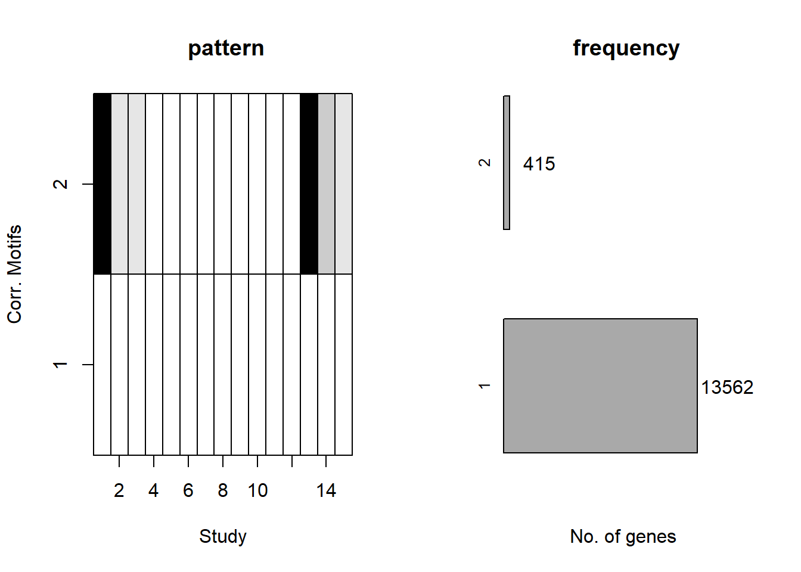

Cormotif_application
Renee Matthews
2025-06-03
Last updated: 2025-06-04
Checks: 7 0
Knit directory: Glucose_project/
This reproducible R Markdown analysis was created with workflowr (version 1.7.1). The Checks tab describes the reproducibility checks that were applied when the results were created. The Past versions tab lists the development history.
Great! Since the R Markdown file has been committed to the Git repository, you know the exact version of the code that produced these results.
Great job! The global environment was empty. Objects defined in the global environment can affect the analysis in your R Markdown file in unknown ways. For reproduciblity it’s best to always run the code in an empty environment.
The command set.seed(20250526) was run prior to running
the code in the R Markdown file. Setting a seed ensures that any results
that rely on randomness, e.g. subsampling or permutations, are
reproducible.
Great job! Recording the operating system, R version, and package versions is critical for reproducibility.
Nice! There were no cached chunks for this analysis, so you can be confident that you successfully produced the results during this run.
Great job! Using relative paths to the files within your workflowr project makes it easier to run your code on other machines.
Great! You are using Git for version control. Tracking code development and connecting the code version to the results is critical for reproducibility.
The results in this page were generated with repository version 3cdd101. See the Past versions tab to see a history of the changes made to the R Markdown and HTML files.
Note that you need to be careful to ensure that all relevant files for
the analysis have been committed to Git prior to generating the results
(you can use wflow_publish or
wflow_git_commit). workflowr only checks the R Markdown
file, but you know if there are other scripts or data files that it
depends on. Below is the status of the Git repository when the results
were generated:
Ignored files:
Ignored: .Rhistory
Ignored: .Rproj.user/
Ignored: data/Annotation_data/
Ignored: data/Cormotif_initial.RDS
Ignored: data/Fastqc_data/
Ignored: data/first_deg_top_tables.RDS
Ignored: data/organized_sample_info.tsv
Ignored: data/subset_filt_raw_counts.RDS
Ignored: data/subset_raw_counts.RDS
Untracked files:
Untracked: code/corMotifcustom.R
Untracked: code/nox_genelist.R
Unstaged changes:
Modified: analysis/Diff_expression.Rmd
Modified: analysis/Expressed_genes.Rmd
Note that any generated files, e.g. HTML, png, CSS, etc., are not included in this status report because it is ok for generated content to have uncommitted changes.
These are the previous versions of the repository in which changes were
made to the R Markdown (analysis/Cormotif_application.Rmd)
and HTML (docs/Cormotif_application.html) files. If you’ve
configured a remote Git repository (see ?wflow_git_remote),
click on the hyperlinks in the table below to view the files as they
were in that past version.
| File | Version | Author | Date | Message |
|---|---|---|---|---|
| Rmd | 3cdd101 | reneeisnowhere | 2025-06-04 | updates and adding cormotif |
library(tidyverse)
library(kableExtra)
library(broom)
library(RColorBrewer)
library("TxDb.Hsapiens.UCSC.hg38.knownGene")
library("org.Hs.eg.db")
library(rtracklayer)
library(edgeR)
library(ggfortify)
library(limma)
library(readr)
library(BiocGenerics)
library(gridExtra)
library(VennDiagram)
library(scales)
library(BiocParallel)
library(ggpubr)
library(devtools)
library(eulerr)
library(ggsignif)
library(plyranges)
library(ggrepel)
library(ComplexHeatmap)
library(cowplot)
library(smplot2)
library(data.table)
library(DT)
library(gprofiler2)## Fit limma model using code as it is found in the original cormotif code. It has
## only been modified to add names to the matrix of t values, as well as the
## limma fits
limmafit.default <- function(exprs,groupid,compid) {
limmafits <- list()
compnum <- nrow(compid)
genenum <- nrow(exprs)
limmat <- matrix(0,genenum,compnum)
limmas2 <- rep(0,compnum)
limmadf <- rep(0,compnum)
limmav0 <- rep(0,compnum)
limmag1num <- rep(0,compnum)
limmag2num <- rep(0,compnum)
rownames(limmat) <- rownames(exprs)
colnames(limmat) <- rownames(compid)
names(limmas2) <- rownames(compid)
names(limmadf) <- rownames(compid)
names(limmav0) <- rownames(compid)
names(limmag1num) <- rownames(compid)
names(limmag2num) <- rownames(compid)
for(i in 1:compnum) {
selid1 <- which(groupid == compid[i,1])
selid2 <- which(groupid == compid[i,2])
eset <- new("ExpressionSet", exprs=cbind(exprs[,selid1],exprs[,selid2]))
g1num <- length(selid1)
g2num <- length(selid2)
designmat <- cbind(base=rep(1,(g1num+g2num)), delta=c(rep(0,g1num),rep(1,g2num)))
fit <- lmFit(eset,designmat)
fit <- eBayes(fit)
limmat[,i] <- fit$t[,2]
limmas2[i] <- fit$s2.prior
limmadf[i] <- fit$df.prior
limmav0[i] <- fit$var.prior[2]
limmag1num[i] <- g1num
limmag2num[i] <- g2num
limmafits[[i]] <- fit
# log odds
# w<-sqrt(1+fit$var.prior[2]/(1/g1num+1/g2num))
# log(0.99)+dt(fit$t[1,2],g1num+g2num-2+fit$df.prior,log=TRUE)-log(0.01)-dt(fit$t[1,2]/w, g1num+g2num-2+fit$df.prior, log=TRUE)+log(w)
}
names(limmafits) <- rownames(compid)
limmacompnum<-nrow(compid)
result<-list(t = limmat,
v0 = limmav0,
df0 = limmadf,
s20 = limmas2,
g1num = limmag1num,
g2num = limmag2num,
compnum = limmacompnum,
fits = limmafits)
}
limmafit.counts <-
function (exprs, groupid, compid, norm.factor.method = "TMM", voom.normalize.method = "none")
{
limmafits <- list()
compnum <- nrow(compid)
genenum <- nrow(exprs)
limmat <- matrix(NA,genenum,compnum)
limmas2 <- rep(0,compnum)
limmadf <- rep(0,compnum)
limmav0 <- rep(0,compnum)
limmag1num <- rep(0,compnum)
limmag2num <- rep(0,compnum)
rownames(limmat) <- rownames(exprs)
colnames(limmat) <- rownames(compid)
names(limmas2) <- rownames(compid)
names(limmadf) <- rownames(compid)
names(limmav0) <- rownames(compid)
names(limmag1num) <- rownames(compid)
names(limmag2num) <- rownames(compid)
for (i in 1:compnum) {
message(paste("Running limma for comparision",i,"/",compnum))
selid1 <- which(groupid == compid[i, 1])
selid2 <- which(groupid == compid[i, 2])
# make a new count data frame
counts <- cbind(exprs[, selid1], exprs[, selid2])
# remove NAs
not.nas <- which(apply(counts, 1, function(x) !any(is.na(x))) == TRUE)
# runn voom/limma
d <- DGEList(counts[not.nas,])
d <- calcNormFactors(d, method = norm.factor.method)
g1num <- length(selid1)
g2num <- length(selid2)
designmat <- cbind(base = rep(1, (g1num + g2num)), delta = c(rep(0,
g1num), rep(1, g2num)))
y <- voom(d, designmat, normalize.method = voom.normalize.method)
fit <- lmFit(y, designmat)
fit <- eBayes(fit)
limmafits[[i]] <- fit
limmat[not.nas, i] <- fit$t[, 2]
limmas2[i] <- fit$s2.prior
limmadf[i] <- fit$df.prior
limmav0[i] <- fit$var.prior[2]
limmag1num[i] <- g1num
limmag2num[i] <- g2num
}
limmacompnum <- nrow(compid)
names(limmafits) <- rownames(compid)
result <- list(t = limmat,
v0 = limmav0,
df0 = limmadf,
s20 = limmas2,
g1num = limmag1num,
g2num = limmag2num,
compnum = limmacompnum,
fits = limmafits)
}
limmafit.list <-
function (fitlist, cmp.idx=2)
{
compnum <- length(fitlist)
genes <- c()
for (i in 1:compnum) genes <- unique(c(genes, rownames(fitlist[[i]])))
genenum <- length(genes)
limmat <- matrix(NA,genenum,compnum)
limmas2 <- rep(0,compnum)
limmadf <- rep(0,compnum)
limmav0 <- rep(0,compnum)
limmag1num <- rep(0,compnum)
limmag2num <- rep(0,compnum)
rownames(limmat) <- genes
colnames(limmat) <- names(fitlist)
names(limmas2) <- names(fitlist)
names(limmadf) <- names(fitlist)
names(limmav0) <- names(fitlist)
names(limmag1num) <- names(fitlist)
names(limmag2num) <- names(fitlist)
for (i in 1:compnum) {
this.t <- fitlist[[i]]$t[,cmp.idx]
limmat[names(this.t),i] <- this.t
limmas2[i] <- fitlist[[i]]$s2.prior
limmadf[i] <- fitlist[[i]]$df.prior
limmav0[i] <- fitlist[[i]]$var.prior[cmp.idx]
limmag1num[i] <- sum(fitlist[[i]]$design[,cmp.idx]==0)
limmag2num[i] <- sum(fitlist[[i]]$design[,cmp.idx]==1)
}
limmacompnum <- compnum
result <- list(t = limmat,
v0 = limmav0,
df0 = limmadf,
s20 = limmas2,
g1num = limmag1num,
g2num = limmag2num,
compnum = limmacompnum,
fits = limmafits)
}
## Rank genes based on statistics
generank<-function(x) {
xcol<-ncol(x)
xrow<-nrow(x)
result<-matrix(0,xrow,xcol)
z<-(1:1:xrow)
for(i in 1:xcol) {
y<-sort(x[,i],decreasing=TRUE,na.last=TRUE)
result[,i]<-match(x[,i],y)
result[,i]<-order(result[,i])
}
result
}
## Log-likelihood for moderated t under H0
modt.f0.loglike<-function(x,df) {
a<-dt(x, df, log=TRUE)
result<-as.vector(a)
flag<-which(is.na(result)==TRUE)
result[flag]<-0
result
}
## Log-likelihood for moderated t under H1
## param=c(df,g1num,g2num,v0)
modt.f1.loglike<-function(x,param) {
df<-param[1]
g1num<-param[2]
g2num<-param[3]
v0<-param[4]
w<-sqrt(1+v0/(1/g1num+1/g2num))
dt(x/w, df, log=TRUE)-log(w)
a<-dt(x/w, df, log=TRUE)-log(w)
result<-as.vector(a)
flag<-which(is.na(result)==TRUE)
result[flag]<-0
result
}
## Correlation Motif Fit
cmfit.X<-function(x, type, K=1, tol=1e-3, max.iter=100) {
## initialize
xrow <- nrow(x)
xcol <- ncol(x)
loglike0 <- list()
loglike1 <- list()
p <- rep(1, K)/K
q <- matrix(runif(K * xcol), K, xcol)
q[1, ] <- rep(0.01, xcol)
for (i in 1:xcol) {
f0 <- type[[i]][[1]]
f0param <- type[[i]][[2]]
f1 <- type[[i]][[3]]
f1param <- type[[i]][[4]]
loglike0[[i]] <- f0(x[, i], f0param)
loglike1[[i]] <- f1(x[, i], f1param)
}
condlike <- list()
for (i in 1:xcol) {
condlike[[i]] <- matrix(0, xrow, K)
}
loglike.old <- -1e+10
for (i.iter in 1:max.iter) {
if ((i.iter%%50) == 0) {
print(paste("We have run the first ", i.iter, " iterations for K=",
K, sep = ""))
}
err <- tol + 1
clustlike <- matrix(0, xrow, K)
#templike <- matrix(0, xrow, 2)
templike1 <- rep(0, xrow)
templike2 <- rep(0, xrow)
for (j in 1:K) {
for (i in 1:xcol) {
templike1 <- log(q[j, i]) + loglike1[[i]]
templike2 <- log(1 - q[j, i]) + loglike0[[i]]
tempmax <- Rfast::Pmax(templike1, templike2)
templike1 <- exp(templike1 - tempmax)
templike2 <- exp(templike2 - tempmax)
tempsum <- templike1 + templike2
clustlike[, j] <- clustlike[, j] + tempmax +
log(tempsum)
condlike[[i]][, j] <- templike1/tempsum
}
clustlike[, j] <- clustlike[, j] + log(p[j])
}
#tempmax <- apply(clustlike, 1, max)
tempmax <- Rfast::rowMaxs(clustlike, value=TRUE)
for (j in 1:K) {
clustlike[, j] <- exp(clustlike[, j] - tempmax)
}
#tempsum <- apply(clustlike, 1, sum)
tempsum <- Rfast::rowsums(clustlike)
for (j in 1:K) {
clustlike[, j] <- clustlike[, j]/tempsum
}
#p.new <- (apply(clustlike, 2, sum) + 1)/(xrow + K)
p.new <- (Rfast::colsums(clustlike) + 1)/(xrow + K)
q.new <- matrix(0, K, xcol)
for (j in 1:K) {
clustpsum <- sum(clustlike[, j])
for (i in 1:xcol) {
q.new[j, i] <- (sum(clustlike[, j] * condlike[[i]][,
j]) + 1)/(clustpsum + 2)
}
}
err.p <- max(abs(p.new - p)/p)
err.q <- max(abs(q.new - q)/q)
err <- max(err.p, err.q)
loglike.new <- (sum(tempmax + log(tempsum)) + sum(log(p.new)) +
sum(log(q.new) + log(1 - q.new)))/xrow
p <- p.new
q <- q.new
loglike.old <- loglike.new
if (err < tol) {
break
}
}
clustlike <- matrix(0, xrow, K)
for (j in 1:K) {
for (i in 1:xcol) {
templike1 <- log(q[j, i]) + loglike1[[i]]
templike2 <- log(1 - q[j, i]) + loglike0[[i]]
tempmax <- Rfast::Pmax(templike1, templike2)
templike1 <- exp(templike1 - tempmax)
templike2 <- exp(templike2 - tempmax)
tempsum <- templike1 + templike2
clustlike[, j] <- clustlike[, j] + tempmax + log(tempsum)
condlike[[i]][, j] <- templike1/tempsum
}
clustlike[, j] <- clustlike[, j] + log(p[j])
}
#tempmax <- apply(clustlike, 1, max)
tempmax <- Rfast::rowMaxs(clustlike, value=TRUE)
for (j in 1:K) {
clustlike[, j] <- exp(clustlike[, j] - tempmax)
}
#tempsum <- apply(clustlike, 1, sum)
tempsum <- Rfast::rowsums(clustlike)
for (j in 1:K) {
clustlike[, j] <- clustlike[, j]/tempsum
}
p.post <- matrix(0, xrow, xcol)
for (j in 1:K) {
for (i in 1:xcol) {
p.post[, i] <- p.post[, i] + clustlike[, j] * condlike[[i]][,
j]
}
}
loglike.old <- loglike.old - (sum(log(p)) + sum(log(q) +
log(1 - q)))/xrow
loglike.old <- loglike.old * xrow
result <- list(p.post = p.post, motif.prior = p, motif.q = q,
loglike = loglike.old, clustlike=clustlike, condlike=condlike)
}
## Fit using (0,0,...,0) and (1,1,...,1)
cmfitall<-function(x, type, tol=1e-3, max.iter=100) {
## initialize
xrow<-nrow(x)
xcol<-ncol(x)
loglike0<-list()
loglike1<-list()
p<-0.01
## compute loglikelihood
L0<-matrix(0,xrow,1)
L1<-matrix(0,xrow,1)
for(i in 1:xcol) {
f0<-type[[i]][[1]]
f0param<-type[[i]][[2]]
f1<-type[[i]][[3]]
f1param<-type[[i]][[4]]
loglike0[[i]]<-f0(x[,i],f0param)
loglike1[[i]]<-f1(x[,i],f1param)
L0<-L0+loglike0[[i]]
L1<-L1+loglike1[[i]]
}
## EM algorithm to get MLE of p and q
loglike.old <- -1e10
for(i.iter in 1:max.iter) {
if((i.iter%%50) == 0) {
print(paste("We have run the first ", i.iter, " iterations",sep=""))
}
err<-tol+1
## compute posterior cluster membership
clustlike<-matrix(0,xrow,2)
clustlike[,1]<-log(1-p)+L0
clustlike[,2]<-log(p)+L1
tempmax<-apply(clustlike,1,max)
for(j in 1:2) {
clustlike[,j]<-exp(clustlike[,j]-tempmax)
}
tempsum<-apply(clustlike,1,sum)
## update motif occurrence rate
for(j in 1:2) {
clustlike[,j]<-clustlike[,j]/tempsum
}
p.new<-(sum(clustlike[,2])+1)/(xrow+2)
## evaluate convergence
err<-abs(p.new-p)/p
## evaluate whether the log.likelihood increases
loglike.new<-(sum(tempmax+log(tempsum))+log(p.new)+log(1-p.new))/xrow
loglike.old<-loglike.new
p<-p.new
if(err<tol) {
break;
}
}
## compute posterior p
clustlike<-matrix(0,xrow,2)
clustlike[,1]<-log(1-p)+L0
clustlike[,2]<-log(p)+L1
tempmax<-apply(clustlike,1,max)
for(j in 1:2) {
clustlike[,j]<-exp(clustlike[,j]-tempmax)
}
tempsum<-apply(clustlike,1,sum)
for(j in 1:2) {
clustlike[,j]<-clustlike[,j]/tempsum
}
p.post<-matrix(0,xrow,xcol)
for(i in 1:xcol) {
p.post[,i]<-clustlike[,2]
}
## return
#calculate back loglikelihood
loglike.old<-loglike.old-(log(p)+log(1-p))/xrow
loglike.old<-loglike.old*xrow
result<-list(p.post=p.post, motif.prior=p, loglike=loglike.old)
}
## Fit each dataset separately
cmfitsep<-function(x, type, tol=1e-3, max.iter=100) {
## initialize
xrow<-nrow(x)
xcol<-ncol(x)
loglike0<-list()
loglike1<-list()
p<-0.01*rep(1,xcol)
loglike.final<-rep(0,xcol)
## compute loglikelihood
for(i in 1:xcol) {
f0<-type[[i]][[1]]
f0param<-type[[i]][[2]]
f1<-type[[i]][[3]]
f1param<-type[[i]][[4]]
loglike0[[i]]<-f0(x[,i],f0param)
loglike1[[i]]<-f1(x[,i],f1param)
}
p.post<-matrix(0,xrow,xcol)
## EM algorithm to get MLE of p
for(coli in 1:xcol) {
loglike.old <- -1e10
for(i.iter in 1:max.iter) {
if((i.iter%%50) == 0) {
print(paste("We have run the first ", i.iter, " iterations",sep=""))
}
err<-tol+1
## compute posterior cluster membership
clustlike<-matrix(0,xrow,2)
clustlike[,1]<-log(1-p[coli])+loglike0[[coli]]
clustlike[,2]<-log(p[coli])+loglike1[[coli]]
tempmax<-apply(clustlike,1,max)
for(j in 1:2) {
clustlike[,j]<-exp(clustlike[,j]-tempmax)
}
tempsum<-apply(clustlike,1,sum)
## evaluate whether the log.likelihood increases
loglike.new<-sum(tempmax+log(tempsum))/xrow
## update motif occurrence rate
for(j in 1:2) {
clustlike[,j]<-clustlike[,j]/tempsum
}
p.new<-(sum(clustlike[,2]))/(xrow)
## evaluate convergence
err<-abs(p.new-p[coli])/p[coli]
loglike.old<-loglike.new
p[coli]<-p.new
if(err<tol) {
break;
}
}
## compute posterior p
clustlike<-matrix(0,xrow,2)
clustlike[,1]<-log(1-p[coli])+loglike0[[coli]]
clustlike[,2]<-log(p[coli])+loglike1[[coli]]
tempmax<-apply(clustlike,1,max)
for(j in 1:2) {
clustlike[,j]<-exp(clustlike[,j]-tempmax)
}
tempsum<-apply(clustlike,1,sum)
for(j in 1:2) {
clustlike[,j]<-clustlike[,j]/tempsum
}
p.post[,coli]<-clustlike[,2]
loglike.final[coli]<-loglike.old
}
## return
loglike.final<-loglike.final*xrow
result<-list(p.post=p.post, motif.prior=p, loglike=loglike.final)
}
## Fit the full model
cmfitfull<-function(x, type, tol=1e-3, max.iter=100) {
## initialize
xrow<-nrow(x)
xcol<-ncol(x)
loglike0<-list()
loglike1<-list()
K<-2^xcol
p<-rep(1,K)/K
pattern<-rep(0,xcol)
patid<-matrix(0,K,xcol)
## compute loglikelihood
for(i in 1:xcol) {
f0<-type[[i]][[1]]
f0param<-type[[i]][[2]]
f1<-type[[i]][[3]]
f1param<-type[[i]][[4]]
loglike0[[i]]<-f0(x[,i],f0param)
loglike1[[i]]<-f1(x[,i],f1param)
}
L<-matrix(0,xrow,K)
for(i in 1:K)
{
patid[i,]<-pattern
for(j in 1:xcol) {
if(pattern[j] < 0.5) {
L[,i]<-L[,i]+loglike0[[j]]
} else {
L[,i]<-L[,i]+loglike1[[j]]
}
}
if(i < K) {
pattern[xcol]<-pattern[xcol]+1
j<-xcol
while(pattern[j] > 1) {
pattern[j]<-0
j<-j-1
pattern[j]<-pattern[j]+1
}
}
}
## EM algorithm to get MLE of p and q
loglike.old <- -1e10
for(i.iter in 1:max.iter) {
if((i.iter%%50) == 0) {
print(paste("We have run the first ", i.iter, " iterations",sep=""))
}
err<-tol+1
## compute posterior cluster membership
clustlike<-matrix(0,xrow,K)
for(j in 1:K) {
clustlike[,j]<-log(p[j])+L[,j]
}
tempmax<-apply(clustlike,1,max)
for(j in 1:K) {
clustlike[,j]<-exp(clustlike[,j]-tempmax)
}
tempsum<-apply(clustlike,1,sum)
## update motif occurrence rate
for(j in 1:K) {
clustlike[,j]<-clustlike[,j]/tempsum
}
p.new<-(apply(clustlike,2,sum)+1)/(xrow+K)
## evaluate convergence
err<-max(abs(p.new-p)/p)
## evaluate whether the log.likelihood increases
loglike.new<-(sum(tempmax+log(tempsum))+sum(log(p.new)))/xrow
loglike.old<-loglike.new
p<-p.new
if(err<tol) {
break;
}
}
## compute posterior p
clustlike<-matrix(0,xrow,K)
for(j in 1:K) {
clustlike[,j]<-log(p[j])+L[,j]
}
tempmax<-apply(clustlike,1,max)
for(j in 1:K) {
clustlike[,j]<-exp(clustlike[,j]-tempmax)
}
tempsum<-apply(clustlike,1,sum)
for(j in 1:K) {
clustlike[,j]<-clustlike[,j]/tempsum
}
p.post<-matrix(0,xrow,xcol)
for(j in 1:K) {
for(i in 1:xcol) {
if(patid[j,i] > 0.5) {
p.post[,i]<-p.post[,i]+clustlike[,j]
}
}
}
## return
#calculate back loglikelihood
loglike.old<-loglike.old-sum(log(p))/xrow
loglike.old<-loglike.old*xrow
result<-list(p.post=p.post, motif.prior=p, loglike=loglike.old)
}
generatetype<-function(limfitted)
{
jtype<-list()
df<-limfitted$g1num+limfitted$g2num-2+limfitted$df0
for(j in 1:limfitted$compnum)
{
jtype[[j]]<-list(f0=modt.f0.loglike, f0.param=df[j], f1=modt.f1.loglike, f1.param=c(df[j],limfitted$g1num[j],limfitted$g2num[j],limfitted$v0[j]))
}
jtype
}
cormotiffit <- function(exprs, groupid=NULL, compid=NULL, K=1, tol=1e-3,
max.iter=100, BIC=TRUE, norm.factor.method="TMM",
voom.normalize.method = "none", runtype=c("logCPM","counts","limmafits"), each=3)
{
# first I want to do some typechecking. Input can be either a normalized
# matrix, a count matrix, or a list of limma fits. Dispatch the correct
# limmafit accordingly.
# todo: add some typechecking here
limfitted <- list()
if (runtype=="counts") {
limfitted <- limmafit.counts(exprs,groupid,compid, norm.factor.method, voom.normalize.method)
} else if (runtype=="logCPM") {
limfitted <- limmafit.default(exprs,groupid,compid)
} else if (runtype=="limmafits") {
limfitted <- limmafit.list(exprs)
} else {
stop("runtype must be one of 'logCPM', 'counts', or 'limmafits'")
}
jtype<-generatetype(limfitted)
fitresult<-list()
ks <- rep(K, each = each)
fitresult <- bplapply(1:length(ks), function(i, x, type, ks, tol, max.iter) {
cmfit.X(x, type, K = ks[i], tol = tol, max.iter = max.iter)
}, x=limfitted$t, type=jtype, ks=ks, tol=tol, max.iter=max.iter)
best.fitresults <- list()
for (i in 1:length(K)) {
w.k <- which(ks==K[i])
this.bic <- c()
for (j in w.k) this.bic[j] <- -2 * fitresult[[j]]$loglike + (K[i] - 1 + K[i] * limfitted$compnum) * log(dim(limfitted$t)[1])
w.min <- which(this.bic == min(this.bic, na.rm = TRUE))[1]
best.fitresults[[i]] <- fitresult[[w.min]]
}
fitresult <- best.fitresults
bic <- rep(0, length(K))
aic <- rep(0, length(K))
loglike <- rep(0, length(K))
for (i in 1:length(K)) loglike[i] <- fitresult[[i]]$loglike
for (i in 1:length(K)) bic[i] <- -2 * fitresult[[i]]$loglike + (K[i] - 1 + K[i] * limfitted$compnum) * log(dim(limfitted$t)[1])
for (i in 1:length(K)) aic[i] <- -2 * fitresult[[i]]$loglike + 2 * (K[i] - 1 + K[i] * limfitted$compnum)
if(BIC==TRUE) {
bestflag=which(bic==min(bic))
}
else {
bestflag=which(aic==min(aic))
}
result<-list(bestmotif=fitresult[[bestflag]],bic=cbind(K,bic),
aic=cbind(K,aic),loglike=cbind(K,loglike), allmotifs=fitresult)
}
cormotiffitall<-function(exprs,groupid,compid, tol=1e-3, max.iter=100)
{
limfitted<-limmafit(exprs,groupid,compid)
jtype<-generatetype(limfitted)
fitresult<-cmfitall(limfitted$t,type=jtype,tol=1e-3,max.iter=max.iter)
}
cormotiffitsep<-function(exprs,groupid,compid, tol=1e-3, max.iter=100)
{
limfitted<-limmafit(exprs,groupid,compid)
jtype<-generatetype(limfitted)
fitresult<-cmfitsep(limfitted$t,type=jtype,tol=1e-3,max.iter=max.iter)
}
cormotiffitfull<-function(exprs,groupid,compid, tol=1e-3, max.iter=100)
{
limfitted<-limmafit(exprs,groupid,compid)
jtype<-generatetype(limfitted)
fitresult<-cmfitfull(limfitted$t,type=jtype,tol=1e-3,max.iter=max.iter)
}
plotIC<-function(fitted_cormotif)
{
oldpar<-par(mfrow=c(1,2))
plot(fitted_cormotif$bic[,1], fitted_cormotif$bic[,2], type="b",xlab="Motif Number", ylab="BIC", main="BIC")
plot(fitted_cormotif$aic[,1], fitted_cormotif$aic[,2], type="b",xlab="Motif Number", ylab="AIC", main="AIC")
}
plotMotif<-function(fitted_cormotif,title="")
{
layout(matrix(1:2,ncol=2))
u<-1:dim(fitted_cormotif$bestmotif$motif.q)[2]
v<-1:dim(fitted_cormotif$bestmotif$motif.q)[1]
image(u,v,t(fitted_cormotif$bestmotif$motif.q),
col=gray(seq(from=1,to=0,by=-0.1)),xlab="Study",yaxt = "n",
ylab="Corr. Motifs",main=paste(title,"pattern",sep=" "))
axis(2,at=1:length(v))
for(i in 1:(length(u)+1))
{
abline(v=(i-0.5))
}
for(i in 1:(length(v)+1))
{
abline(h=(i-0.5))
}
Ng=10000
if(is.null(fitted_cormotif$bestmotif$p.post)!=TRUE)
Ng=nrow(fitted_cormotif$bestmotif$p.post)
genecount=floor(fitted_cormotif$bestmotif$motif.p*Ng)
NK=nrow(fitted_cormotif$bestmotif$motif.q)
plot(0,0.7,pch=".",xlim=c(0,1.2),ylim=c(0.75,NK+0.25),
frame.plot=FALSE,axes=FALSE,xlab="No. of genes",ylab="", main=paste(title,"frequency",sep=" "))
segments(0,0.7,fitted_cormotif$bestmotif$motif.p[1],0.7)
rect(0,1:NK-0.3,fitted_cormotif$bestmotif$motif.p,1:NK+0.3,
col="dark grey")
mtext(1:NK,at=1:NK,side=2,cex=0.8)
text(fitted_cormotif$bestmotif$motif.p+0.15,1:NK,
labels=floor(fitted_cormotif$bestmotif$motif.p*Ng))
}
plotMotifnew<-function(fitted_cormotif,title="")
{
layout(matrix(1:2,ncol=2))
u<-1:dim(fitted_cormotif$motif.q)[2]
v<-1:dim(fitted_cormotif$motif.q)[1]
image(u,v,t(fitted_cormotif$motif.q),
col=gray(seq(from=1,to=0,by=-0.1)),xlab="Experiment",yaxt = "n",
ylab="Corr. Motifs",main=paste(title,"pattern",sep=" "))
axis(2,at=1:length(v))
for(i in 1:(length(u)+1))
{
abline(v=(i-0.5))
}
for(i in 1:(length(v)+1))
{
abline(h=(i-0.5))
}
Ng=10000
if(is.null(fitted_cormotif$p.post)!=TRUE)
Ng=nrow(fitted_cormotif$p.post)
genecount=floor(fitted_cormotif$motif.p*Ng)
NK=nrow(fitted_cormotif$motif.q)
plot(0,0.7,pch=".",xlim=c(0,1.2),ylim=c(0.75,NK+0.25),
frame.plot=FALSE,axes=FALSE,xlab="No. of regions",ylab="", main=paste(title,"frequency",sep=" "))
segments(0,0.7,fitted_cormotif$motif.p[1],0.7)
rect(0,1:NK-0.3,fitted_cormotif$motif.p,1:NK+0.3,
col="dark grey")
mtext(1:NK,at=1:NK,side=2,cex=0.8)
text(fitted_cormotif$motif.p+0.15,1:NK,
labels=floor(fitted_cormotif$motif.p*Ng))
}subset_raw_counts <- readRDS("data/subset_filt_raw_counts.RDS")
annotation_dataframe <- data.frame(timeset = colnames(subset_raw_counts)) %>%
separate_wider_delim(.,cols=timeset, names=c("indv","glucose","time","sex","rep"),delim="_")%>%
mutate(indv=factor(indv, levels= c( "1","2","3","4","5","6")),
glucose=factor(glucose, levels=c("low", "norm", "osnorm", "high")),
time=factor(time, levels = c("2hr" ,"24hr", "1week")),
sex=factor(sex, levels=c("f","m")),
rep=factor(rep, levels=c("A","B")),
condition=interaction(time,glucose),
names=paste0(indv,"_",glucose,"_",time,"_",sex,"_",rep)) %>%
mutate(condition=factor(condition)) %>%
column_to_rownames("names")
group <- annotation_dataframe$condition
levels(group) [1] "2hr.low" "24hr.low" "1week.low" "2hr.norm" "24hr.norm"
[6] "1week.norm" "2hr.osnorm" "24hr.osnorm" "1week.osnorm" "2hr.high"
[11] "24hr.high" "1week.high" conds <- c("2hr.low", "24hr.low", "1week.low", "2hr.norm", "24hr.norm", "1week.norm",
"2hr.osnorm", "24hr.osnorm", "1week.osnorm", "2hr.high", "24hr.high", "1week.high")
# Extract timepoints and groups
timepoints <- c("2hr", "24hr", "1week")
groups <- c("low", "norm", "osnorm", "high")
# Initialize empty vectors to store indices for compid
c1 <- c()
c2 <- c()
for (tp in timepoints) {
# Find indices for groups in this timepoint
idx_low <- which(conds == paste0(tp, ".low"))
idx_norm <- which(conds == paste0(tp, ".norm"))
idx_osnorm <- which(conds == paste0(tp, ".osnorm"))
idx_high <- which(conds == paste0(tp, ".high"))
# low vs norm
c1 <- c(c1, idx_low)
c2 <- c(c2, idx_norm)
# osnorm vs norm
c1 <- c(c1, idx_osnorm)
c2 <- c(c2, idx_norm)
# high vs norm
c1 <- c(c1, idx_high)
c2 <- c(c2, idx_norm)
# high vs osnorm
c1 <- c(c1, idx_high)
c2 <- c(c2, idx_osnorm)
# low vs osnorm
c1 <- c(c1, idx_low)
c2 <- c(c2, idx_osnorm)
}
compid <- data.frame(c1 = c1, c2 = c2)
print(compid)group <- annotation_dataframe$condition
groupid <- factor(group)
groupid <- as.numeric(groupid)
dge <- DGEList.data.frame(counts = subset_raw_counts, group = group, genes = row.names(subset_raw_counts))
dge <- calcNormFactors(dge)
dge$samples group lib.size norm.factors
1_norm_2hr_f_A 2hr.norm 14992620 0.9984893
1_low_2hr_f_A 2hr.low 16045703 0.9830013
1_low_24hr_f_A 24hr.low 20680900 0.9587281
1_low_1week_f_A 1week.low 16272792 0.9587507
2_norm_2hr_m_A 2hr.norm 17173224 1.0035054
2_high_2hr_m_A 2hr.high 16639064 1.0100647
2_osnorm_2hr_m_A 2hr.osnorm 18644235 1.0250138
2_high_24hr_m_A 24hr.high 17803576 1.0239424
2_osnorm_24hr_m_A 24hr.osnorm 18053974 1.0298807
2_norm_1week_m_A 1week.norm 19478441 1.0324606
1_high_2hr_f_A 2hr.high 16167349 0.9761718
2_high_1week_m_A 1week.high 19658777 1.0287449
2_osnorm_1week_m_A 1week.osnorm 18811741 1.0175439
2_low_2hr_m_A 2hr.low 16403321 1.0256340
2_low_24hr_m_A 24hr.low 17181554 1.0315049
2_low_1week_m_A 1week.low 18651903 1.0215598
3_norm_2hr_f_A 2hr.norm 16776928 0.9850247
3_high_2hr_f_A 2hr.high 17092629 1.0077790
3_osnorm_2hr_f_A 2hr.osnorm 17719191 1.0054248
3_norm_24hr_f_A 24hr.norm 18091965 1.0205030
3_high_24hr_f_A 24hr.high 28070821 1.0380944
1_osnorm_2hr_f_A 2hr.osnorm 15997510 0.9693999
3_osnorm_24hr_f_A 24hr.osnorm 19889428 1.0152826
3_norm_1week_f_A 1week.norm 18113829 1.0124075
3_high_1week_f_A 1week.high 20129339 1.0128988
3_osnorm_1week_f_A 1week.osnorm 18088287 1.0024521
3_low_2hr_f_A 2hr.low 18277207 1.0175695
3_low_24hr_f_A 24hr.low 20035798 1.0127316
3_low_1week_f_A 1week.low 20259255 0.9887022
4_norm_2hr_m_A 2hr.norm 19051284 0.9923758
4_high_2hr_m_A 2hr.high 20669141 0.9996293
4_osnorm_2hr_m_A 2hr.osnorm 18629905 0.9795338
1_norm_24hr_f_A 24hr.norm 16637655 0.9145545
4_norm_24hr_m_A 24hr.norm 18811203 1.0352214
4_high_24hr_m_A 24hr.high 20423554 1.0219497
4_osnorm_24hr_m_A 24hr.osnorm 17914423 1.0270885
4_norm_1week_m_A 1week.norm 19235598 1.0163009
4_high_1week_m_A 1week.high 18374945 1.0017527
4_osnorm_1week_m_A 1week.osnorm 17121395 0.9876747
4_low_2hr_m_A 2hr.low 18251238 1.0073954
4_low_24hr_m_A 24hr.low 17964230 1.0029929
4_low_1week_m_A 1week.low 18818657 1.0047943
5_norm_2hr_m_A 2hr.norm 18614809 1.0177275
1_high_24hr_f_A 24hr.high 17506599 0.9129430
5_high_2hr_m_A 2hr.high 22363026 1.0024546
5_osnorm_2hr_m_A 2hr.osnorm 17964465 1.0003134
5_norm_24hr_m_A 24hr.norm 18503552 0.9925119
5_high_24hr_m_A 24hr.high 17375429 0.9947440
5_osnorm_24hr_m_A 24hr.osnorm 18697750 0.9901897
5_norm_1week_m_A 1week.norm 17696809 1.0007564
5_high_1week_m_A 1week.high 18387625 1.0005862
5_osnorm_1week_m_A 1week.osnorm 16184864 1.0114902
5_low_2hr_m_A 2hr.low 17230931 1.0099424
5_low_24hr_m_A 24hr.low 18132180 1.0100082
1_osnorm_24hr_f_A 24hr.osnorm 16286005 0.9290966
5_low_1week_m_A 1week.low 18359632 1.0127034
6_norm_2hr_f_A 2hr.norm 17436704 0.9830301
6_high_2hr_f_A 2hr.high 16688222 0.9953388
6_osnorm_2hr_f_A 2hr.osnorm 16652903 0.9979950
6_norm_24hr_f_A 24hr.norm 17335613 1.0184949
6_high_24hr_f_A 24hr.high 17346195 0.9901657
6_osnorm_24hr_f_A 24hr.osnorm 17652481 1.0196610
6_norm_1week_f_A 1week.norm 20212671 1.0039989
6_high_1week_f_A 1week.high 20689080 1.0056180
6_osnorm_1week_f_A 1week.osnorm 20417448 1.0014762
1_norm_1week_f_A 1week.norm 16139419 0.9446316
6_low_2hr_f_A 2hr.low 19020099 1.0194203
6_low_24hr_f_A 24hr.low 20279089 1.0133007
6_low_1week_f_A 1week.low 19784016 1.0264167
1_high_1week_f_A 1week.high 15242131 0.9644690
1_osnorm_1week_f_A 1week.osnorm 18761375 0.9509140tmm_cpm_dge <- cpm(dge,log=TRUE)
compid <- data.frame(c1= c(1,2,3,7,8,9,10,11,12,10,11,12,1,2,3),c2=c(4,5,6,4,5,6,4,5,6,7,8,9,7,8,9))
table(groupid)groupid
1 2 3 4 5 6 7 8 9 10 11 12
6 6 6 6 5 6 6 6 6 6 6 6 table(compid) c2
c1 4 5 6 7 8 9
1 1 0 0 1 0 0
2 0 1 0 0 1 0
3 0 0 1 0 0 1
7 1 0 0 0 0 0
8 0 1 0 0 0 0
9 0 0 1 0 0 0
10 1 0 0 1 0 0
11 0 1 0 0 1 0
12 0 0 1 0 0 1names_of_levels <- (data.frame(idlevel=(levels(group)),number=c(1:12)))set.seed(31415)
cormotif_initial_norm <- cormotiffit(exprs = tmm_cpm_dge, groupid = groupid, compid = compid, K=1:8, max.iter = 500, runtype = "logCPM")
saveRDS(cormotif_initial_norm,"data/Cormotif_initial.RDS")
###used compid <- data.frame(c1= c(1,2,3,7,8,9,10,11,12,10,11,12,1,2,3),c2=c(4,5,6,4,5,6,4,5,6,7,8,9,7,8,9))cormotif_initial_norm <- readRDS("data/Cormotif_initial.RDS")
plotIC(cormotif_initial_norm)
plotMotif(cormotif_initial_norm)
name_of_study <- c("2hr.low_vs_2hr.norm",
"24hr.low_vs_24hr.norm",
"1week.low_vs_1week.norm",
"2hr.osnorm_vs_2hr.norm",
"24hr.osnorm_vs_24hr.norm",
"1week.osnorm_vs_1week.norm",
"2hr.high_vs_2hr.norm",
"24hr.high_vs_24hr.norm",
"1week.high_vs_1week.norm",
"2hr.high_vs_2hr.osnorm",
"24hr.high_vs_24hr.osnorm",
"1week.high_vs_1week.osnorm",
"2hr.low_vs_2hr.osnorm",
"24hr.low_vs_24hr.osnorm",
"1week.low_vs_1week.osnorm")
print(name_of_study) [1] "2hr.low_vs_2hr.norm" "24hr.low_vs_24hr.norm"
[3] "1week.low_vs_1week.norm" "2hr.osnorm_vs_2hr.norm"
[5] "24hr.osnorm_vs_24hr.norm" "1week.osnorm_vs_1week.norm"
[7] "2hr.high_vs_2hr.norm" "24hr.high_vs_24hr.norm"
[9] "1week.high_vs_1week.norm" "2hr.high_vs_2hr.osnorm"
[11] "24hr.high_vs_24hr.osnorm" "1week.high_vs_1week.osnorm"
[13] "2hr.low_vs_2hr.osnorm" "24hr.low_vs_24hr.osnorm"
[15] "1week.low_vs_1week.osnorm"
sessionInfo()R version 4.4.2 (2024-10-31 ucrt)
Platform: x86_64-w64-mingw32/x64
Running under: Windows 11 x64 (build 26100)
Matrix products: default
locale:
[1] LC_COLLATE=English_United States.utf8
[2] LC_CTYPE=English_United States.utf8
[3] LC_MONETARY=English_United States.utf8
[4] LC_NUMERIC=C
[5] LC_TIME=English_United States.utf8
time zone: America/Chicago
tzcode source: internal
attached base packages:
[1] grid stats4 stats graphics grDevices utils datasets
[8] methods base
other attached packages:
[1] gprofiler2_0.2.3
[2] DT_0.33
[3] data.table_1.17.0
[4] smplot2_0.2.5
[5] cowplot_1.1.3
[6] ComplexHeatmap_2.22.0
[7] ggrepel_0.9.6
[8] plyranges_1.26.0
[9] ggsignif_0.6.4
[10] eulerr_7.0.2
[11] devtools_2.4.5
[12] usethis_3.1.0
[13] ggpubr_0.6.0
[14] BiocParallel_1.40.0
[15] scales_1.3.0
[16] VennDiagram_1.7.3
[17] futile.logger_1.4.3
[18] gridExtra_2.3
[19] ggfortify_0.4.17
[20] edgeR_4.4.2
[21] limma_3.62.2
[22] rtracklayer_1.66.0
[23] org.Hs.eg.db_3.20.0
[24] TxDb.Hsapiens.UCSC.hg38.knownGene_3.20.0
[25] GenomicFeatures_1.58.0
[26] AnnotationDbi_1.68.0
[27] Biobase_2.66.0
[28] GenomicRanges_1.58.0
[29] GenomeInfoDb_1.42.3
[30] IRanges_2.40.1
[31] S4Vectors_0.44.0
[32] BiocGenerics_0.52.0
[33] RColorBrewer_1.1-3
[34] broom_1.0.7
[35] kableExtra_1.4.0
[36] lubridate_1.9.4
[37] forcats_1.0.0
[38] stringr_1.5.1
[39] dplyr_1.1.4
[40] purrr_1.0.4
[41] readr_2.1.5
[42] tidyr_1.3.1
[43] tibble_3.2.1
[44] ggplot2_3.5.1
[45] tidyverse_2.0.0
[46] workflowr_1.7.1
loaded via a namespace (and not attached):
[1] later_1.4.1 BiocIO_1.16.0
[3] bitops_1.0-9 rpart_4.1.24
[5] XML_3.99-0.18 lifecycle_1.0.4
[7] rstatix_0.7.2 doParallel_1.0.17
[9] rprojroot_2.0.4 processx_3.8.6
[11] lattice_0.22-6 backports_1.5.0
[13] magrittr_2.0.3 plotly_4.10.4
[15] Hmisc_5.2-2 sass_0.4.9
[17] rmarkdown_2.29 jquerylib_0.1.4
[19] yaml_2.3.10 remotes_2.5.0
[21] httpuv_1.6.15 sessioninfo_1.2.3
[23] pkgbuild_1.4.6 DBI_1.2.3
[25] abind_1.4-8 pkgload_1.4.0
[27] zlibbioc_1.52.0 RCurl_1.98-1.16
[29] nnet_7.3-20 git2r_0.35.0
[31] circlize_0.4.16 GenomeInfoDbData_1.2.13
[33] svglite_2.1.3 codetools_0.2-20
[35] DelayedArray_0.32.0 xml2_1.3.7
[37] shape_1.4.6.1 tidyselect_1.2.1
[39] farver_2.1.2 UCSC.utils_1.2.0
[41] base64enc_0.1-3 matrixStats_1.5.0
[43] GenomicAlignments_1.42.0 jsonlite_1.9.1
[45] GetoptLong_1.0.5 ellipsis_0.3.2
[47] Formula_1.2-5 iterators_1.0.14
[49] systemfonts_1.2.1 foreach_1.5.2
[51] tools_4.4.2 Rcpp_1.0.14
[53] glue_1.8.0 SparseArray_1.6.2
[55] xfun_0.51 MatrixGenerics_1.18.1
[57] withr_3.0.2 formatR_1.14
[59] fastmap_1.2.0 callr_3.7.6
[61] digest_0.6.37 timechange_0.3.0
[63] R6_2.6.1 mime_0.12
[65] colorspace_2.1-1 RSQLite_2.3.9
[67] generics_0.1.3 httr_1.4.7
[69] htmlwidgets_1.6.4 S4Arrays_1.6.0
[71] whisker_0.4.1 pkgconfig_2.0.3
[73] gtable_0.3.6 blob_1.2.4
[75] XVector_0.46.0 htmltools_0.5.8.1
[77] carData_3.0-5 pwr_1.3-0
[79] profvis_0.4.0 clue_0.3-66
[81] png_0.1-8 knitr_1.49
[83] lambda.r_1.2.4 rstudioapi_0.17.1
[85] tzdb_0.4.0 rjson_0.2.23
[87] checkmate_2.3.2 curl_6.2.1
[89] zoo_1.8-13 cachem_1.1.0
[91] GlobalOptions_0.1.2 parallel_4.4.2
[93] miniUI_0.1.1.1 foreign_0.8-88
[95] restfulr_0.0.15 pillar_1.10.1
[97] vctrs_0.6.5 urlchecker_1.0.1
[99] promises_1.3.2 car_3.1-3
[101] cluster_2.1.8.1 xtable_1.8-4
[103] htmlTable_2.4.3 evaluate_1.0.3
[105] cli_3.6.4 locfit_1.5-9.12
[107] compiler_4.4.2 futile.options_1.0.1
[109] Rsamtools_2.22.0 rlang_1.1.5
[111] crayon_1.5.3 ps_1.9.0
[113] getPass_0.2-4 fs_1.6.5
[115] stringi_1.8.4 viridisLite_0.4.2
[117] munsell_0.5.1 Biostrings_2.74.1
[119] lazyeval_0.2.2 Matrix_1.7-3
[121] patchwork_1.3.0 hms_1.1.3
[123] bit64_4.6.0-1 KEGGREST_1.46.0
[125] statmod_1.5.0 shiny_1.10.0
[127] SummarizedExperiment_1.36.0 memoise_2.0.1
[129] bslib_0.9.0 bit_4.6.0